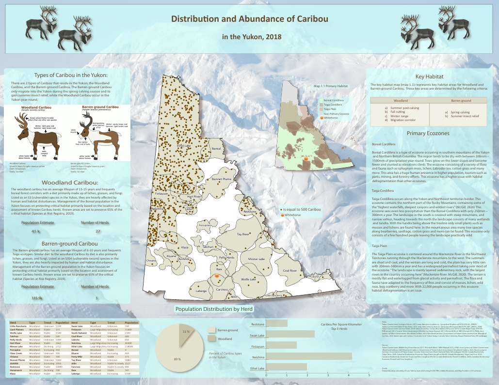
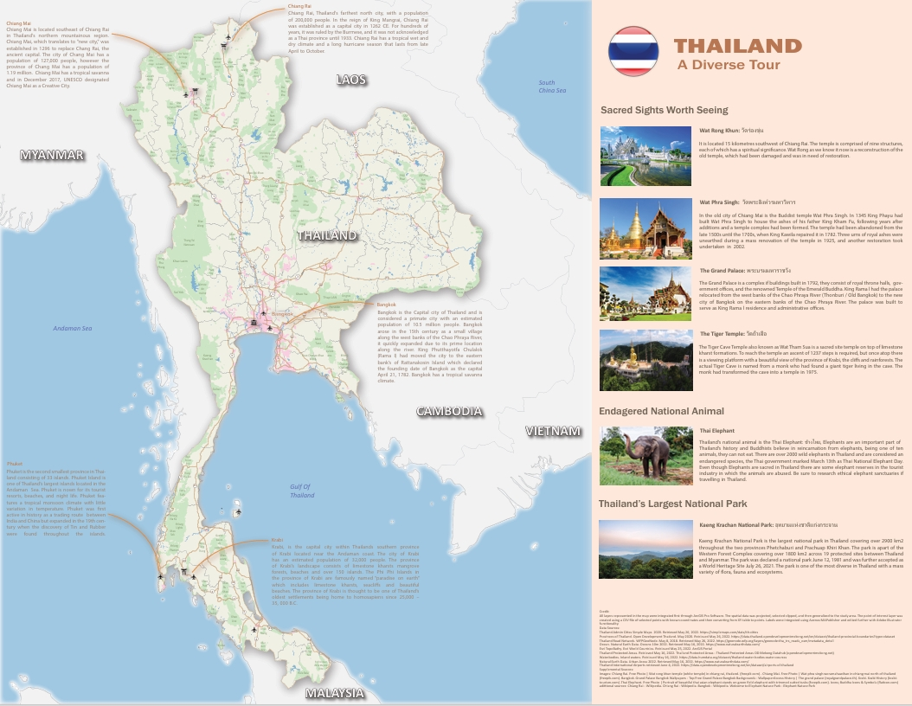
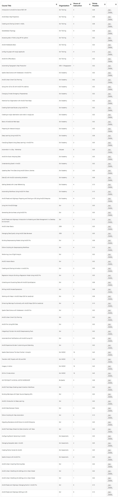
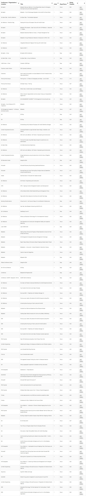

Allison Talsma
GIS Technologist | GIS Analyst Candidate
Helping organizations improve decision-making, modernize workflows, and strengthen data governance through GIS, automation, and spatial analysis.
GISP Candidate | Best MApps People's Choice Award Recipient (2023) | Second Place Best MApps People's Choice Award (2023)
About Me
I am a GIS Technologist with over four years of municipal GIS experience supporting Engineering, Public Works, Operations, Recreation, Planning, and Finance. My experience spans Municipal GIS, Enterprise GIS, Web GIS Development, GIS Automation, Asset Management, Data Governance, and Business Process Improvement.
GIS Technologies & Expertise
ArcGIS Pro ArcMap ArcGIS Online ArcGIS Enterprise ArcGIS Portal Web App Builder Experience Builder Field Maps Survey123 Dashboards Python Power Automate ETL Workflows ModelBuilder SQL Database Design Data Governance Metadata Authoritative Data Open Source Web GIS Development Mapbox GL JS ArcGIS JavaScript API Leaflet HTML/CSS Arcade LiDAR Processing Spatial Analysis Cartography
Professional Highlights
4+ Years Municipal GIS
Supporting municipal operations through GIS, automation, workflow modernization, asset management, and application development.
Enterprise GIS
ArcGIS Enterprise, Portal governance, LiDAR deployment, authoritative datasets, and publishing workflows.
Web GIS Development
Mapbox GL JS, HTML, CSS, JavaScript, GeoJSON, GitHub deployment, and public-facing GIS applications.
Professional Journey
My career has consistently centered around technology, problem-solving, and improving workflows. Throughout my career, I have been particularly interested in the intersection of technology, data, and business processes. Whether supporting users, developing Web GIS applications, implementing automation, managing Enterprise GIS environments, or improving municipal workflows, I focus on practical ways GIS can deliver long-term value through better data, better processes, and better decision-making. Each role has strengthened my understanding of how technology and GIS can improve organizational decision-making and operational efficiency.
Technology, Design & Process Improvement (2015 - 2018)
My professional career began in Alberta as a Prepress Coordinator with SupremeX Inc., supporting digital printing operations and production workflows. Working extensively with Adobe Acrobat and Adobe Illustrator, I troubleshot technical file issues, coordinated production schedules, maintained quality control standards, and supported a company-wide software implementation following an organizational acquisition. This role provided early exposure to technology integration, process improvement, workflow optimization, and supporting users through organizational change.
Key Experience- Adobe Acrobat & Illustrator
- Workflow Optimization
- Technical Troubleshooting
- Quality Assurance
- Software Implementation
- User Support
Environmental Science & GIS Foundations (2018 - 2021)
Jump to Parks Canada Student Position ↓
Seeking a career more closely aligned with conservation and natural resource management, I enrolled in Fleming College's Ecosystem Management Technician program. During this time, I developed foundational skills in environmental science, surveying, geomatics, GPS data collection, resource management, and GIS while simultaneously gaining practical field experience through conservation and environmental organizations.
Key Experience- Environmental GIS
- Spatial Analysis
- GPS & Field Data Collection
- Natural Resource Management
- Geomatics
- Surveying
- Environmental Monitoring
Parks Canada (2020 - 2021)
While working as a Resource Conservation Technician with Parks Canada, I gained my first professional GIS experience supporting habitat restoration, wetlands monitoring, GPS data collection, invasive species management, and environmental reporting. Using ArcMap and GPS technology, I collected, analyzed, and interpreted field data while contributing to habitat restoration and species-at-risk initiatives throughout Ontario Waterways. This experience ultimately inspired me to pursue GIS as a career.
One of my primary responsibilities was supporting the European Water Chestnut control program within the Rideau Canal system. Working in partnership with Ducks Unlimited Canada and Parks Canada staff, I collected and analyzed field data to monitor invasive species distribution and treatment effectiveness. Using GIS analysis and field-collected GPS data, I independently prepared the annual European Water Chestnut program report, including all supporting maps, figures, graphics, analysis, and written content. The report was developed for Parks Canada management and project stakeholders and required translating technical field observations and spatial data into a clear and meaningful summary of program results, accomplishments, and future recommendations.
Key Experience- ArcMap
- GPS Data Collection
- Habitat Analysis
- Environmental Monitoring
- Invasive Species Management
- Technical Report Writing
- Cartography & Map Production
- Stakeholder Reporting
- Ducks Unlimited Collaboration
Geographic Information Systems (GIS) Program - Fleming College (2021 - 2022)
Jump to Municipal GIS Placement ↓
Recognizing that GIS combined my interests in technology, data management, and problem-solving, I returned to Fleming College to complete the Geographic Information Systems post-graduate certificate program. The program provided a strong technical foundation in GIS analysis, SQL database management, relational database design, Web GIS development, programming, automation, cartography, and municipal GIS workflows. Through a combination of classroom and project-based learning, I gained experience designing databases, developing web mapping applications, performing spatial and raster analysis, automating workflows, and communicating complex information through cartographic products.
As part of the Web GIS curriculum, I also gained exposure to cloud-hosted GIS solutions through Amazon Web Services (AWS), where I configured and managed cloud instances used to host web mapping applications. This included deploying web content, managing service availability, and developing an understanding of the infrastructure required to support modern Web GIS applications. Many of the concepts introduced through the program continue to support my work today in municipal GIS, Enterprise GIS, automation, application development, and data governance.
Relevant Coursework- SQL Database Management Systems (DBMS)
- Relational Database Design
- Programming & Automation
- Spatial Analysis
- Raster Analysis
- Web GIS Development
- Web Communications
- Municipal Mapping
- GIS Analysis & Modelling
- Cartography & Data Visualization
- Cloud Hosting & AWS Fundamentals
- ArcGIS Pro
- SQL & Database Management
- Python Automation
- Web GIS Development
- GIS Analysis
- Cartographic Design
Peterborough County Municipal GIS Placement (2022)
As part of Fleming College's Municipal Mapping course, I was selected to complete a municipal placement project with Peterborough County and the Township of Asphodel-Norwood. This experience provided my first direct exposure to municipal GIS operations and allowed me to apply GIS concepts within a real-world municipal environment. Working directly with municipal stakeholders, I developed a cartographic parks and trails map that was ultimately included in the Township's community guide publication while also preparing and packaging GIS data for long-term municipal use.
This project introduced me to many of the challenges and opportunities associated with municipal GIS, including stakeholder engagement, data management, cartographic communication, and the practical application of GIS technology to support public-facing municipal products.
Key Experience- Municipal GIS Operations
- Stakeholder Collaboration
- Cartographic Design
- GIS Data Packaging & Delivery
- ArcGIS Pro
- Municipal Mapping Products
- Public Communication Through GIS
Friends of the Dumoine River (2020 - ongoing support until May 2025)
As part of a team of three, I helped design, develop, and implement a complete Web GIS solution for the Friends of the Dumoine River. Beginning as a capstone project and evolving into a real-world deployment, the project included a bilingual website, interactive web mapping application, GitHub deployment, stakeholder support, and long-term maintenance. Following completion of the academic component, our team continued supporting implementation, deployment, and maintenance through the official launch and ongoing operation of the website and GIS web map.
Key Experience- Web GIS Development
- HTML / CSS / JavaScript
- Mapbox GL JS
- GeoJSON
- GitHub Deployment
- Open Source GIS
- Public-Facing Applications
- Stakeholder Support
South Nation Conservation Authority (2022)
Working as a GIS Assistant within an ArcGIS Enterprise environment, I supported ArcGIS Portal, authoritative datasets, LiDAR deployment, publishing workflows, field data integration, and spatial analysis initiatives. This role provided valuable exposure to Enterprise GIS concepts including governance, content management, data stewardship, and organization-wide GIS delivery while strengthening my troubleshooting and analytical capabilities.
Key Experience- ArcGIS Enterprise
- ArcGIS Portal
- LiDAR Processing & Distribution
- GIS Governance
- Publishing Workflows
- Spatial Analysis
- Field Maps
- Authoritative Datasets
Municipality of Clarington (2022 - Present)
AADT Automation Streetlight Tracking Tree Lifecycle Tracking
Over the past four years, I have focused on GIS automation, workflow modernization, data governance, application development, asset management, and business process improvement. Working across multiple departments including Engineering, Public Works, Planning, Recreation, Finance, and Operations, I have developed automated workflows, systems of record, ETL processes, and GIS applications that improve data quality, reduce manual effort, and support operational decision-making.
Key Experience- ArcGIS Online
- Experience Builder
- Dashboards
- Field Maps
- Python Automation
- Power Automate
- ETL Development
- Asset Management
- Data Governance
- Documentation & Metadata
- User Support
- Business Process Improvement
Programming & Automation
Streetlight Change Tracking
Developed a system of record that maintains historical asset changes and hydro account updates.
Fire Dispatch ETL
Developed ETL workflows that automatically identify and process only modified fire dispatch records, eliminating full dataset refreshes and significantly reducing monthly maintenance effort.
AADT & Highway Classification Automation
Developed an automated workflow integrating Survey123, Power Automate, Python, SQL, and the Enterprise Geodatabase to maintain current AADT values and roadway classifications.
Tree Lifecycle Tracking
Developed a workflow to track the complete lifecycle of municipal planting locations including removals, replacements, and planting history.
Enterprise GIS
Working within ArcGIS Enterprise environments, I supported authoritative datasets, publishing workflows, Portal governance, LiDAR deployment, field-to-office workflows, and delivery of GIS information to both internal and external users.
ArcGIS Portal Governance
LiDAR Integration & Delivery
Web GIS Development
Friends of the Dumoine River
Developed and launched a bilingual website and interactive GIS mapping application utilizing HTML, CSS, JavaScript, GeoJSON, and Mapbox GL JS. The project was originally developed as a post-secondary collaboration project and later transitioned into a production GIS solution. Following the academic portion, our team continued supporting implementation, deployment, and maintenance through the official website and GIS web map launch.
Technology Stack
- HTML
- CSS
- JavaScript
- Mapbox GL JS
- GeoJSON
- GitHub Deployment
Hosting Architecture
Project Links
Education & Professional Development
Fleming College - Geographic Information Systems (Cartographic Specialist)
Post-Graduate Certificate | 2022
- SQL Database Management Systems (DBMS)
- Relational Database Design
- Web GIS Development
- Programming & Automation
- Municipal Mapping
- GIS Analysis
- Cartography & Data Visualization
Fleming College - Ecosystem Management Technician
Diploma | 2021
- Environmental GIS
- Surveying
- Geomatics
- Resource Management
- Natural Heritage Systems
Fleming College - Indigenous Perspectives Designation
Awarded in recognition of studies focused on Indigenous knowledges, intellectual traditions, cultural practices, reconciliation, and the application of Indigenous perspectives within both personal and professional environments.
University of Alberta - Indigenous Canada
Certificate focused on Indigenous histories, governance, treaties, worldviews, and contemporary Indigenous issues across Canada.
Professional Recognition & Development
Best Maps
Award-Winning Cartography
Recognized for cartographic design, data visualization, and effective communication of geospatial information.
People's Choice Award — 2023
First-place award for excellence in cartographic design, communication, and presentation of spatial information.

Full-resolution PDF available upon request.
Second Place — People's Choice Award, 2023
Recognized for cartographic quality, data visualization, and clear communication of geospatial information.

Full-resolution PDF available upon request.
GISP Candidate
Completed the professional experience and portfolio requirements and currently preparing to write the GIS Professional (GISP) examination.
Pursuing the GISP reflects a commitment to continuous learning, professional standards, GIS best practices, and long-term professional development.
Continued Learning & Professional Development
As I work toward my GISP certification, I continue to expand my knowledge through professional development courses, webinars, workshops, and training sessions. The following highlights my ongoing commitment to learning, strengthening my GIS expertise, and staying current with geospatial technologies and industry best practices.


A visual record of ongoing professional development and commitment to continuous learning.
Training Certificates
Over 30 professional development certificates completed through Esri Academy, Contech Engineering, and other industry training programs. Topics include Enterprise GIS, GIS automation, Python scripting, spatial analysis, linear referencing, machine learning, data quality management, web GIS, and transportation data management.
Contact
allison.talsma@hotmail.com
705-821-1098
Ontario, Canada